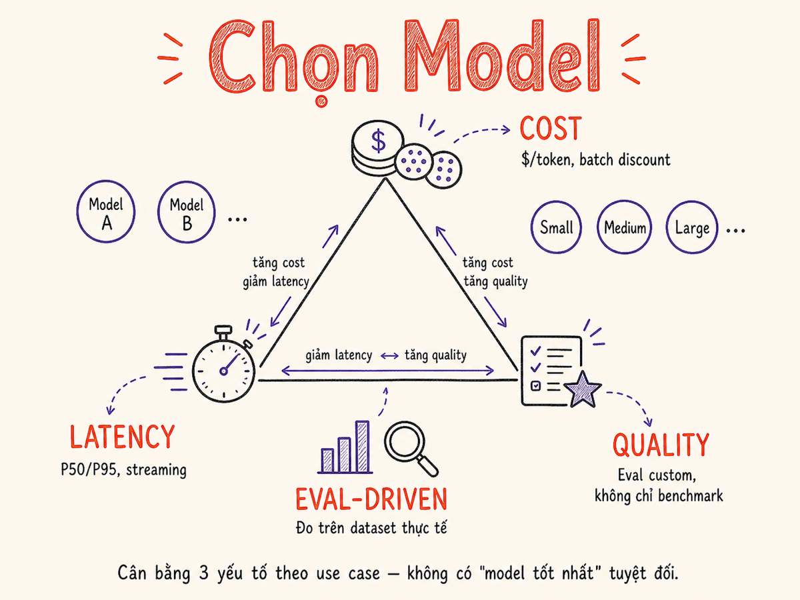

Model Selection & Evaluation
Làm thế nào chọn đúng model cho use case của bạn — và quan trọng hơn, làm thế nào đo lường xem model đó có thực sự hoạt động tốt trong production hay không.

5.1 Khung lựa chọn model: Cost vs Latency vs Quality
Không có model "tốt nhất" — chỉ có model phù hợp nhất với use case. Ba chiều cần trade-off:
Framework chọn model
- Define task requirements: Accuracy threshold bao nhiêu? Latency SLA là gì? Budget/month tối đa?
- Bắt đầu với model mạnh nhất để biết quality ceiling có thể đạt được.
- Downgrade cho đến khi đạt threshold. Nếu GPT-4o mini đã đủ accuracy → dùng nó, không cần GPT-4o.
- Test trên real data. Benchmark công khai không phản ánh use case của bạn.
Nếu có 1 triệu requests/ngày, chênh lệch $0.001/request = $1000/ngày = $365K/năm. Model selection ảnh hưởng trực tiếp đến P&L — không chỉ là technical decision.
5.2 Benchmark Công Khai & Giới Hạn
| Benchmark | Đo lường gì | Format | Hạn chế chính |
|---|---|---|---|
| MMLU | Knowledge breadth (57 subjects) | Multiple choice | Nhiều câu đã xuất hiện trong training data |
| HumanEval | Code generation Python | Pass@k (unit tests) | Chỉ Python, real-world code khác nhiều |
| GPQA | Expert-level reasoning (PhD) | Multiple choice | Narrow domain, không đại diện cho nhiều use case |
| MATH | Mathematical problem solving | Open-ended | Competition math, khác toán ứng dụng thực tế |
| SWE-bench | Real GitHub issue resolution | Code patches | Chỉ đo resolution rate, không đo code quality |
| MT-Bench | Multi-turn conversation quality | LLM-judged 1–10 | Judge model có thể có bias |
| LMSYS Chatbot Arena | Human preference (ELO) | Pairwise human vote | Self-selected users, không representative |
Contamination: nhiều benchmark đã leak vào training data của models. Không phản ánh use case: model top benchmark chưa chắc tốt hơn cho task cụ thể của bạn. Luôn cần custom eval trên data thực.
5.3 Build Custom Eval — Eval-Driven Development
Custom eval là bộ test cases từ data thực của bạn, với criteria đo lường quality theo đúng định nghĩa của business. Đây là nền tảng để cải thiện AI system một cách có hướng.
Xây dựng eval dataset
# Cấu trúc cơ bản của eval dataset (JSONL)
{
"id": "eval_001",
"input": {
"email_subject": "Invoice #1234 due tomorrow",
"email_body": "Please review and approve..."
},
"expected_output": "important",
"metadata": {
"category": "finance",
"difficulty": "easy"
}
}
# Scoring function đơn giản
def score_classification(expected: str, actual: str) -> float:
return 1.0 if expected == actual else 0.0
# Aggregated score
scores = [score_classification(e["expected_output"], run_model(e["input"]))
for e in eval_dataset]
accuracy = sum(scores) / len(scores)
print(f"Accuracy: {accuracy:.1%}") # e.g., "Accuracy: 87.5%"Eval-Driven Development workflow
Giống TDD cho software, Eval-Driven Development viết eval trước khi optimize:
- Define metric: "accuracy trên email classification phải ≥ 90%"
- Build eval set: 200 emails đã labeled thủ công
- Baseline: chạy zero-shot prompt → đo accuracy
- Improve: thêm few-shot, CoT, fine-tune → đo lại
- Ship khi đạt threshold
5.4 LLM-as-Judge
Với open-ended tasks (summarization, creative writing, QA) không có "exact answer", dùng một LLM mạnh hơn để đánh giá output của model cần test.
Ưu điểm
- Scalable — không cần human cho mỗi example
- Consistent hơn human khi có rubric tốt
- Có thể evaluate nhiều tiêu chí cùng lúc
- Chi phí thấp hơn human annotation nhiều lần
Nhược điểm
- Positional bias: thích answer đặt trước trong pairwise
- Verbosity bias: thích answer dài hơn
- Self-enhancement bias: GPT-4 thích output từ GPT-4
- Không detect factual errors nếu judge không có knowledge đó
Các patterns LLM-as-Judge
So sánh output với reference answer (ground truth):
judge_prompt = """You are an expert evaluator.
Compare the AI's answer to the reference answer.
Score from 1-5 on each dimension:
- Accuracy: does it match key facts in reference?
- Completeness: does it cover all key points?
- Conciseness: is there unnecessary information?
Reference: {reference}
AI Answer: {ai_answer}
Return JSON: {{"accuracy": X, "completeness": X, "conciseness": X, "reasoning": "..."}}"Đánh giá output dựa trên criteria tuyệt đối, không cần reference:
judge_prompt = """Evaluate this customer support response.
Score 1-5 on:
- Helpfulness: does it solve the customer's problem?
- Tone: professional and empathetic?
- Accuracy: plausibly correct information?
Response to evaluate: {response}
Customer message: {customer_message}
Return JSON: {{"helpfulness": X, "tone": X, "accuracy": X}}"So sánh hai outputs và chọn output tốt hơn — pairwise comparison:
judge_prompt = """Given a user question, which response is better?
User Question: {question}
Response A: {response_a}
Response B: {response_b}
Consider: accuracy, helpfulness, clarity.
Output: "A" or "B" or "tie", then explain briefly."
# Mitigation cho positional bias: swap A/B,
# run 2 lần, only count nếu consistent(1) Dùng model mạnh hơn model được evaluate. (2) Provide rubric rõ ràng, không chỉ "rate 1-5". (3) Validate judge quality bằng cách spot-check một số judgments với human. (4) Randomize position trong pairwise để giảm positional bias.
5.5 Human Evaluation
Dù LLM-judge scalable, human evaluation vẫn không thể thay thế hoàn toàn — đặc biệt cho safety-critical applications, rare edge cases, và khi calibrate judge quality.
Likert Scale Annotation
Annotators rate output trên scale 1–5 (hoặc 1–7) theo từng dimension:
| Dimension | 1 (Tệ) | 3 (Trung bình) | 5 (Tốt) |
|---|---|---|---|
| Accuracy | Nhiều facts sai | Một số facts questionable | Chính xác hoàn toàn |
| Coherence | Khó theo dõi, mâu thuẫn | Ổn, vài chỗ unclear | Mạch lạc, dễ hiểu |
| Helpfulness | Không giải quyết vấn đề | Giải quyết một phần | Giải quyết hoàn toàn |
Khi nào bắt buộc dùng human eval
- Safety-critical: medical advice, legal, financial — LLM judge không đủ tin cậy
- Cultural nuance: humor, sarcasm, tone phụ thuộc văn hóa
- Initial calibration: trước khi dùng LLM-judge, human-validate sample để biết judge có accurate không
- Disagreement resolution: khi automated metrics disagree nhau
5.6 A/B Testing trong Production
Offline eval trên static dataset không đủ — cần validate trên real users với real behavior. A/B testing cho phép đo business metrics thực sự (user satisfaction, task completion, retention).
# Routing logic đơn giản
def get_model_for_user(user_id: str) -> str:
# 10% users vào treatment group (model B)
if hash(user_id) % 100 < 10:
return "gpt-4o" # treatment: mới, đắt hơn
return "gpt-4o-mini" # control: hiện tại
# Log để phân tích sau
log_event({
"user_id": user_id,
"variant": model_used,
"latency_ms": latency,
"user_thumbs_up": thumbs_up,
"task_completed": completed
})Cần ít nhất 1000+ samples per variant để đạt statistical significance (p < 0.05). Dùng chi-squared test cho categorical metrics, t-test cho continuous. Đừng ship chỉ dựa trên gut feeling — measure!
5.7 Eval cho RAG (Preview)
RAG systems có thêm dimension cần evaluate — không chỉ final answer mà cả retrieval quality và generation faithfulness.
| Metric | Đo lường | Tool |
|---|---|---|
| Faithfulness | Answer có supported bởi retrieved docs không? | RAGAS, TruLens |
| Answer Relevance | Answer có relevant với question không? | RAGAS |
| Context Recall | Retrieved docs có chứa info cần thiết không? | RAGAS, custom |
| Context Precision | Retrieved docs có nhiều noise không? | RAGAS |
| Hallucination Rate | % answers có claims không có trong docs | LLM-judge |
RAG evals sẽ được cover sâu hơn trong §09 — RAG. Phần này chỉ giới thiệu để bạn có mental model khi thiết kế eval strategy.
5.8 Eval cho Agents (Preview)
Agent evaluation phức tạp hơn nhiều vì phải đo cả process (các bước thực hiện) lẫn outcome (kết quả cuối cùng).
Task Completion Rate
% tasks agent hoàn thành thành công. Cần define rõ "thành công" = gì cho từng task type.
task_success_rate = successful_tasks / total_tasksTrajectory Quality
Evaluate từng bước trong plan: agent có chọn đúng tool, đúng thứ tự, đúng parameters không?
step_accuracy = correct_steps / total_steps- Efficiency: số bước thực tế vs số bước tối thiểu cần thiết
- Safety: agent có thực hiện hành động nguy hiểm / không cho phép không?
- Robustness: agent xử lý errors và unexpected situations như thế nào?
5.9 Eval Tooling
Braintrust
Hosted Eval-focused
- Eval framework với versioning và experiment tracking
- UI compare prompt versions, models side-by-side
- LLM-as-judge built-in với nhiều scoring functions
- GitHub integration — run evals on PR
- Điểm mạnh: developer experience, prompt management
Langfuse
Open-source Observability + Eval
- Self-hostable — tốt cho enterprise/compliance requirements
- Tracing cho complex pipelines (RAG, agents)
- Human annotation UI cho eval
- Tích hợp tốt với LangChain, LlamaIndex
- Điểm mạnh: observability + eval trong một platform
Arize AI / Phoenix
Enterprise ML Observability
- Arize: enterprise ML monitoring, drift detection
- Phoenix: open-source, tốt cho RAG + agent tracing
- Embedding visualization, clustering
- Điểm mạnh: production monitoring, team collaboration
Promptfoo
Open-source CLI-first
- CLI tool để test prompts — dễ integrate vào CI/CD
- Config-as-code với YAML
- Red-teaming và adversarial testing
- So sánh nhiều models/providers cùng lúc
- Điểm mạnh: developer workflow, fast iteration
# promptfoo config.yaml
prompts:
- prompts/classify_v1.txt
- prompts/classify_v2.txt
providers:
- openai:gpt-4o-mini
- anthropic:claude-haiku-3-5
tests:
- vars:
email: "Invoice due tomorrow"
assert:
- type: equals
value: "important"| Tool | Type | Best for | Pricing |
|---|---|---|---|
| Braintrust | SaaS | Eval-driven dev, prompt management | Free tier + paid |
| Langfuse | OSS / SaaS | Observability + eval, self-host | Free OSS, cloud paid |
| Arize Phoenix | OSS | RAG tracing, embedding viz | Free |
| Promptfoo | OSS CLI | CI/CD evals, red-teaming | Free |
| OpenAI Evals | OSS framework | OpenAI-centric eval | Free |
Tóm tắt
- Không có model tốt nhất — chọn dựa trên cost/latency/quality trade-off của use case cụ thể.
- Public benchmarks là điểm tham khảo, không phải sự thật cuối cùng — contamination và distribution mismatch là vấn đề thực.
- Custom eval trên real data là investment quan trọng nhất — build ngay từ đầu, không phải sau khi có vấn đề.
- LLM-as-Judge scalable nhưng cần calibrate với human eval và biết các bias của nó.
- Human eval không thể bỏ qua cho safety-critical applications và cultural nuance.
- A/B test trong production để validate business metrics thực sự, không chỉ quality metrics.
- RAG và Agent eval cần thêm dimensions (faithfulness, trajectory quality) — sẽ cover chi tiết ở sections sau.
- Tooling: Braintrust hoặc Langfuse cho eval + observability; Promptfoo cho CI/CD integration.